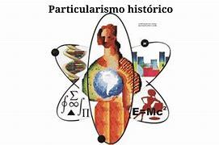

Teoría Antropológica Particularismo Histórico
El particularismo histórico es una corriente dentro de la antropología que surgió a finales del siglo XIX y principios del XX, liderada por Franz Boas y sus seguidores. Este enfoque se opone al evolucionismo cultural y busca entender las culturas estudiando su desarrollo histórico específico en lugar de aplicar un modelo universal de progreso cultural.
Pregunta 1: ¿Quién fue uno de los principales exponentes del particularismo histórico?
Pregunta 2: ¿Qué busca el particularismo histórico al estudiar las culturas?
Pregunta 3: ¿Qué aspecto enfatiza el particularismo histórico en su método de estudio?
Pregunta 4: ¿Qué implica el enfoque holístico del particularismo histórico?
REPRESENTACION

Video
Bibliografía
- Boas, F. (1887). The Study of Geography. Science, 9(219), 157-158.